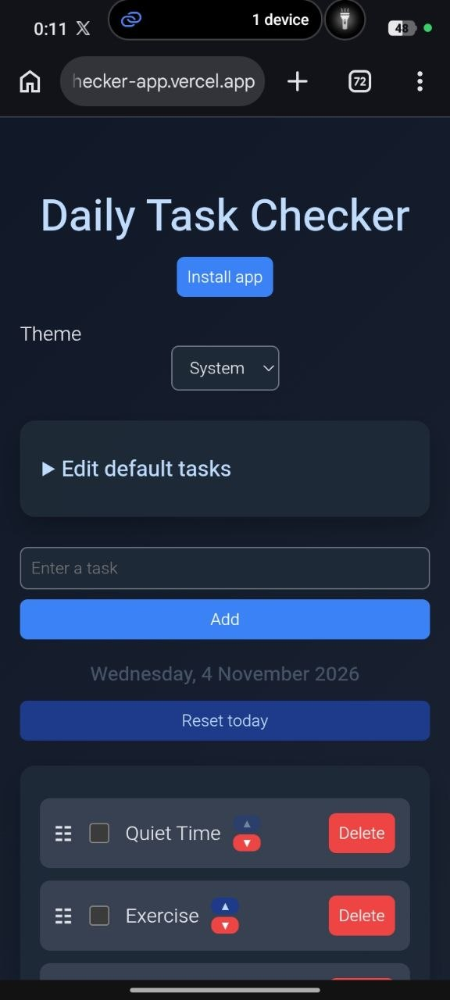

Started software development, joined DSA 2.0
Welcome
Olawale Isreal Feranmi
Software developer in training, based in Nigeria. I am learning JavaScript, data structures and algorithms, and sharing my progress as I grow.
Open to internships and entry-level roles
$ who am I -> Olawale Isreal Feranmi
$ role -> Software Developer in training
$ now -> Learning JavaScript, data structures and algorithms
OF
about.js
About me
I am learning software development in public from Nigeria, with JavaScript as my main language. This site is where I share the honest progress: what I study, what I build, and what I understand next.
My approach is simple: learn, build, document. I am working toward internships, entry-level roles, and collaborations where I can keep growing with other people who enjoy making things.
Main language: JavaScript
journey.md
My learning journey
Joined TS Academy (runs until March 2027)
Shipped Daily Task Checker
Learning in public and building my first projects
Write the Daily Task Checker case study and start my next project
Currently learningIn progress
DSA 2.055% complete, 53 days left
TS Academy5% complete, 143 days left
skills.json
Skills
- JavaScript
- HTML
- CSS
- Git and GitHub
- localStorage
- Service Worker API
- Web App Manifest
- Data structures and algorithmslearning
log.txt
Learning log
Joined TS Academy
Starting a structured learning program and documenting the journey.
Started DSA 2.0
Beginning a focused study of data structures and algorithms.
projects/
My projects
Live01

Daily Task Checker
A browser-based daily task checker for managing, completing, reordering, and saving personal daily tasks.
Read case studyReach out to me
Follow along as I learn, build, and document software development. I would be happy to connect, hear from you, and explore collaborations.